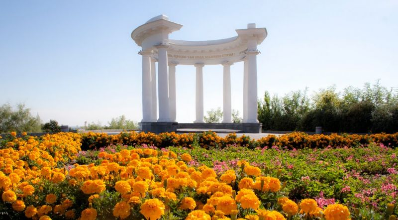
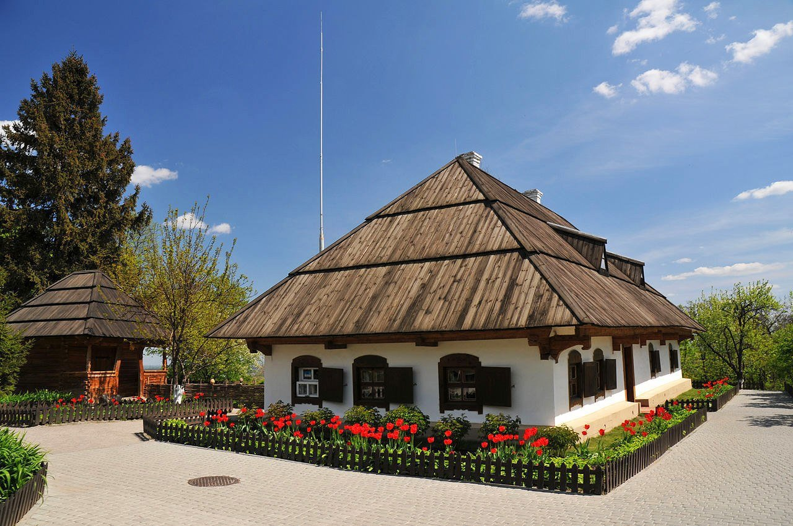
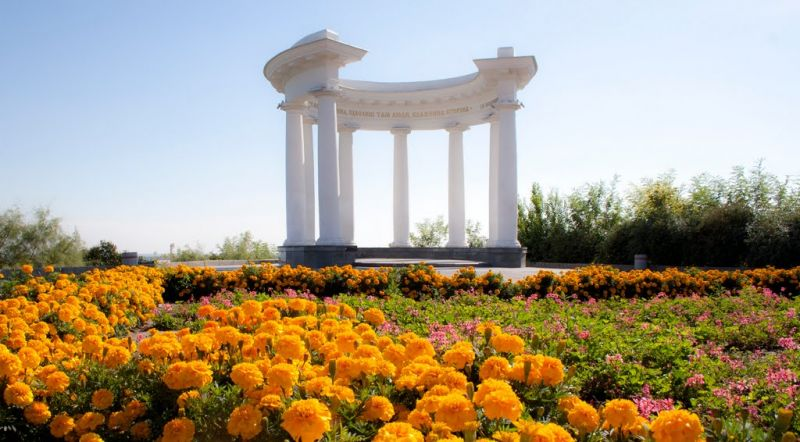
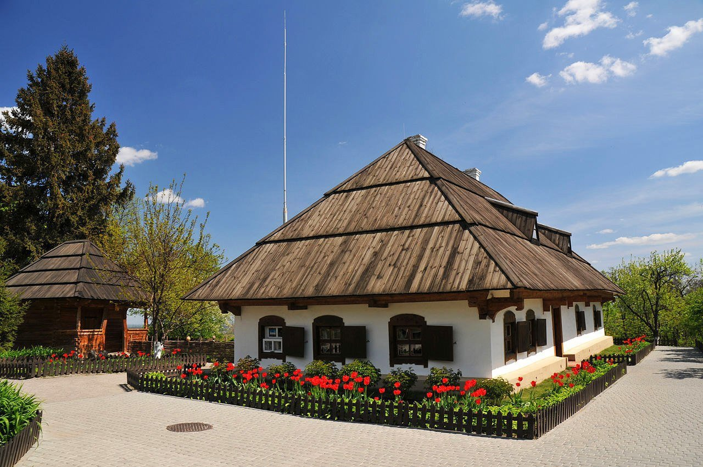

Моя Батьківщина
Моя Батьківщина - Полтава
 



Опис місць:
- Краєзнавчий музей: Один із найстаріших музеїв України, який зберігає багатство культурної спадщини Полтавщини. Відома будівля музею вражає унікальною архітектурою у стилі українського модерну.
- Біла Альтанка: Символ Полтави, розташований на Івановій горі. Вона є улюбленим місцем туристів і місцевих мешканців, звідки відкривається захоплюючий вид на місто.
- Садиба Івана Котляревського: Меморіальний комплекс, присвячений великому українському письменнику, автору "Енеїди". Це місце зберігає атмосферу доби Івана Петровича.